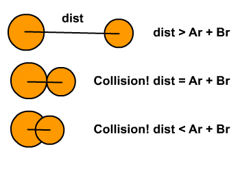

Assignment 4: Bumping Balls
Bumping Balls
In this lab you will simulate multiple bouncing balls, that may bump into each other or into the wall. The steps articulated below for completing this lab recommend that you develop the code in stages, so that you can test as you go and make sure you are on the right track.
You have the knowledge you need to do this assignment, but the assignment is written-up in a style usually seen for software specification: you are told what should happen, but it's up to you to make it happen.
As always, consult with TAs when you are stuck.
Resources
-
Do your work in the
lab4package of thelabssource folder, in theBumpingBallsclass. -
Review the implementation of
BouncingBallfound in thebooksource folder, package book.ch1. -
Review the additions we made to
BouncingBallto obtain -
While there is some physics required for this lab, the information you need to know is simply the following:
- Two balls are colliding if the distance between the two balls' centers is less than the sum of the two balls' radii:

- Image from http://kahshiu.wordpress.com/page/2/
- Ar and Br are the radii of the two balls.
- dist is the distance between the two balls' centers.
-
The distance between two points can be computed using the distance formula
Description
-
Prompt the user for the number of balls that will be simulated in your program and the number of iterations for the simulation.
-
For each ball, find a random place on the screen to place that ball.
-
For each ball, compute a random velocity for that ball.
Based on what you have learned so far in this course, how will you keep track of the balls' positions and velocities?
-
Finding a reasonable range of velocities may require some trial-and-error, or some thinking and experimentation using pencil and paper:
- If the balls move too fast, they might fly off the screen.
- If they move too slowly, the simulation will take forever for you to see something.
-
Iterate the specified number of times, each time recomputing each ball's location
-
When a ball collides with a wall, change its velocity as shown in the
BouncingBallprogram. -
When a ball collides with another ball, change both its horizontal and vertical velocity component, as if the ball hit a corner of the screen.
-
For extra fun, have the balls replaced by images you like. There are some in the
imagesfolder in your repo, but you are free to find others. Be sure to commit those to your repository. -
For extra extra fun, play sounds when balls collide. Some of those can be found in the
soundfolder.
#Submitting your work:
To submit your work, contact the instructor or a TA. They will walk you through the submission process. Be prepared to show them the work that you have done and answer their questions about it!